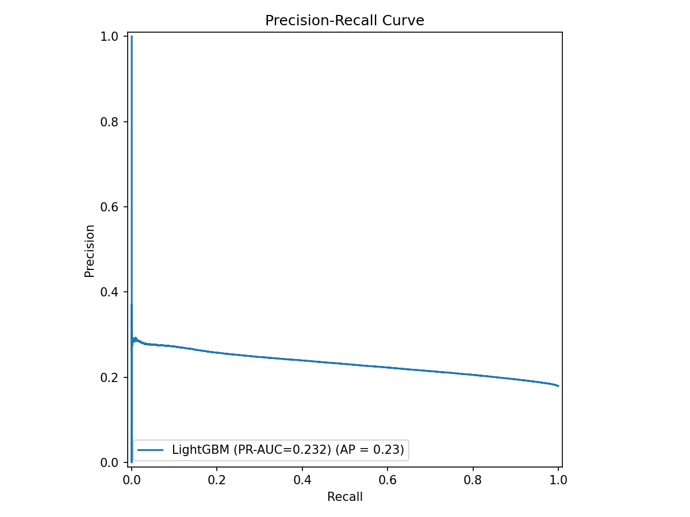
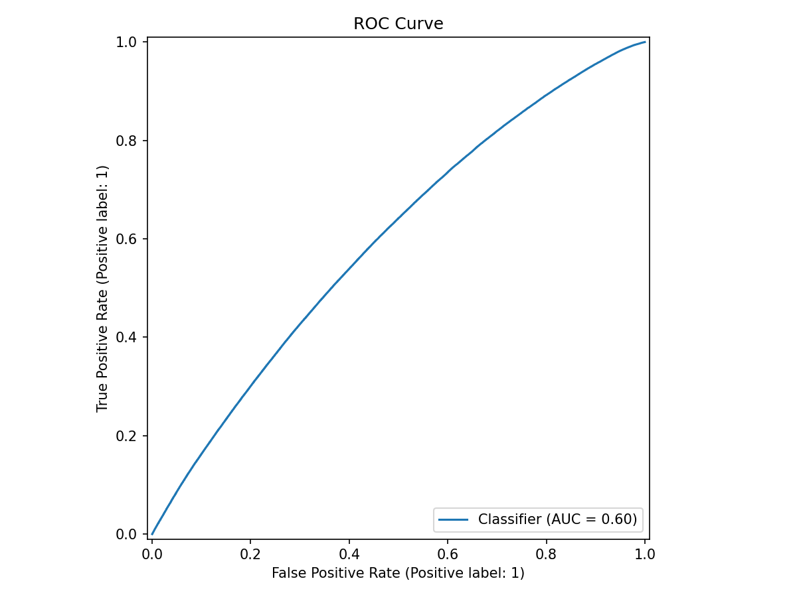
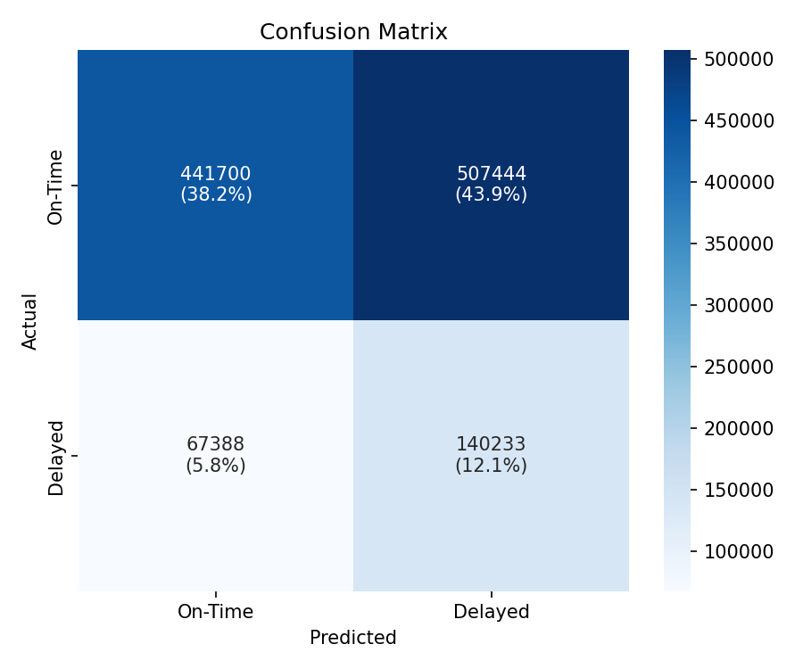
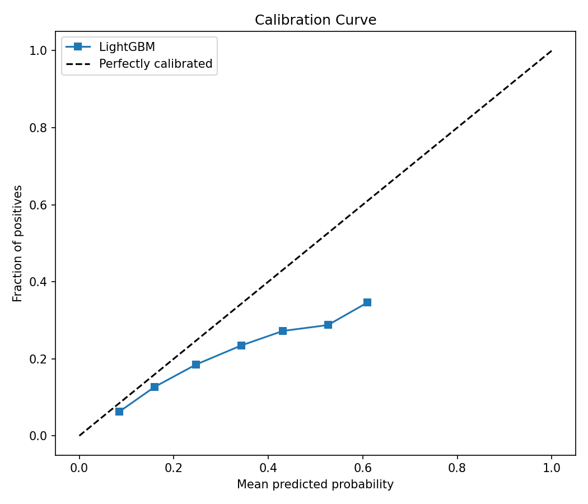
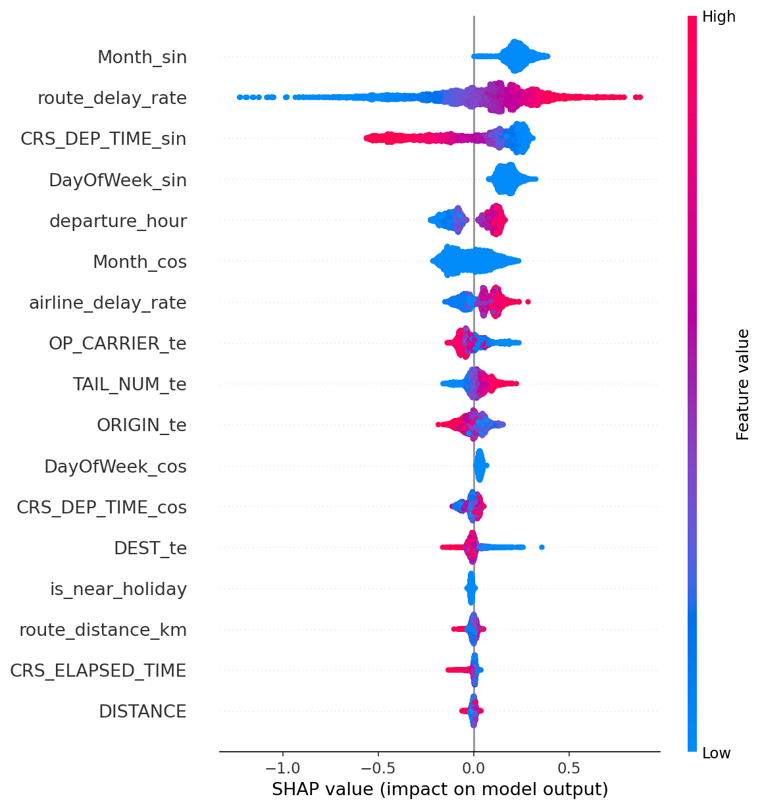
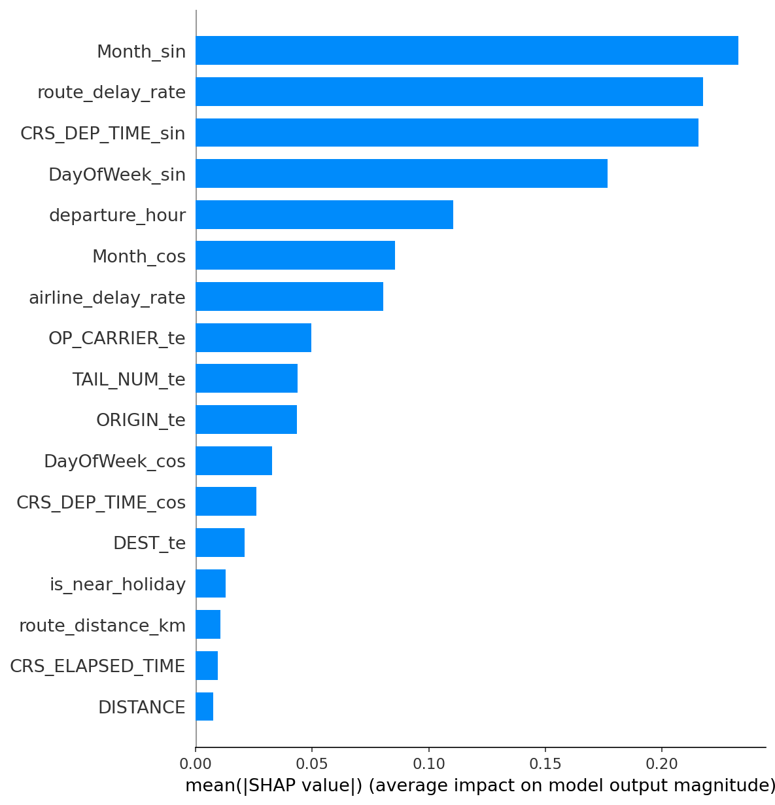

This project builds an end-to-end machine learning system that predicts whether a U.S. domestic flight will arrive 15 or more minutes late, using only information available 24 hours before departure. The system employs a LightGBM gradient-boosted decision tree trained on the Bureau of Transportation Statistics (BTS) On-Time Performance dataset (~7 million flights). A 17-feature engineering pipeline transforms raw records through cyclic temporal encoding, Haversine great-circle distance, K-Fold smoothed target encoding (λ=20), historical delay aggregates, and holiday proximity detection.
A strict temporal split (Jan–Aug training, Sep–Oct validation, Nov–Dec test) simulates real deployment. Evaluation uses PR-AUC as the primary metric given the ~20% imbalanced positive class. A three-stage leakage audit (blacklist enforcement, high-correlation scan, SHAP importance check) ensures no post-departure information contaminates predictions. SHAP TreeExplainer provides per-prediction feature attributions.
The model is deployed as a Streamlit web application on Streamlit Community Cloud, featuring an interactive 3D globe, airline-branded boarding pass cards, a SHAP waterfall chart, and a modular component architecture. A FastAPI + React alternative is also containerised via Docker Compose.
Flight delays cost the U.S. economy over $30 billion annually. In 2023, approximately 21% of domestic flights arrived more than 15 minutes late. While airlines monitor delays internally, passengers and operational planners lack accessible pre-departure predictive tools—existing consumer tools primarily report real-time status rather than forecasts.
From a machine learning perspective, flight delay prediction presents a moderately imbalanced binary target (~20% delayed), rich categorical features (airline, airport, aircraft), temporal patterns (hour, day, season), and geospatial structure (route distance). Critically, it also introduces temporal information leakage: many BTS columns (taxi times, actual departure/arrival, delay breakdowns) are only available post-departure. Using these features produces artificially inflated accuracy that is useless in practice.
This project addresses this by enforcing a strict T-24h information boundary. Every feature—from cyclic departure-time encoding to smoothed historical delay rates—is knowable 24 hours before departure. The system spans the full ML lifecycle: data ingestion, temporal splitting, feature engineering, Bayesian hyperparameter optimisation, SHAP interpretability, leakage auditing, and deployment as a full-stack web application.
The task is a supervised binary classification problem:
y = 1 if arrival delay ≥ 15 minutes; y = 0 otherwiseThe model must satisfy four domain-specific requirements:
Rebollo & Balakrishnan (2014) applied Random Forests to U.S. airport departure delays, demonstrating that tree-based ensembles outperform linear models by capturing non-linear interactions between weather, traffic, and temporal features.
Kim et al. (2016) compared Logistic Regression, SVM, Random Forest, and Gradient Boosting on BTS data, finding Gradient Boosting consistently achieved the highest AUC. They emphasised the critical importance of removing post-departure features to avoid information leakage.
Ke et al. (2017) introduced LightGBM, a gradient-boosting framework using histogram-based splitting and leaf-wise growth, achieving state-of-the-art tabular performance while training 10–20× faster than traditional GBDT implementations.
Akiba et al. (2019) introduced Optuna, a hyperparameter optimisation framework using Tree-structured Parzen Estimators (TPE) that converges to near-optimal configurations in 30–50 trials on typical search spaces.
Lundberg & Lee (2017) introduced SHAP, providing a theoretically grounded framework for feature attribution. TreeSHAP computes exact Shapley values in polynomial time for tree models, enabling per-prediction explanations at production speed.
The BTS On-Time Performance dataset from the U.S. Bureau of Transportation Statistics covers all U.S. carriers with ≥0.5% of domestic passenger revenue. A typical full-year dataset contains ~6–7 million flight records across 15+ carriers and 300+ airports. Available at https://www.transtats.bts.gov/.
| Column | Type | Description |
|---|---|---|
FL_DATE | date | Flight date (YYYY-MM-DD) |
OP_CARRIER | string | IATA airline code (e.g., “AA”, “DL”) |
ORIGIN, DEST | string | Airport IATA codes |
CRS_DEP_TIME | integer | Scheduled departure (HHMM format) |
CRS_ELAPSED_TIME | float | Scheduled duration (minutes) |
DISTANCE | float | Route distance (statute miles) |
ArrDelay | float | Arrival delay in minutes |
TAIL_NUM | string | Aircraft tail number |
Month, DayOfWeek | integer | Calendar month / ISO day of week |
| Blacklisted Column | Reason |
|---|---|
TaxiOut, TaxiIn | Only known after pushback / landing |
WheelsOff, WheelsOn | Actual takeoff / landing times |
ActualElapsedTime, AirTime | Only computable post-flight |
CarrierDelay, WeatherDelay, NASDelay, SecurityDelay, LateAircraftDelay | Post-flight delay attribution |
DiversionDistance | Only applies to diverted flights |
ActualDeparture, ActualArrival | Post-departure times |
The load_raw() function accepts CSV/Parquet, standardises BTS column name variants, enforces the 26-string blacklist (14 columns × 2 case variants), creates the binary label, drops cancelled/diverted rows (null ArrDelay), and sorts chronologically by FL_DATE.
| Split | Months | Approx. Size | Purpose |
|---|---|---|---|
| Train | January–August (1–8) | ~70% | Model learning |
| Validation | September–October (9–10) | ~15% | Hyperparameter tuning, threshold selection |
| Test | November–December (11–12) | ~15% | Final held-out evaluation |
Unlike random splits, temporal splitting simulates real deployment where the model only predicts future flights from past data. Runtime assertions enforce strict chronological ordering:
assert max(train_dates) < min(val_dates), "Train/val date overlap detected"
assert max(val_dates) < min(test_dates), "Val/test date overlap detected"The FeaturePipeline class in src/features/pipeline.py transforms raw flight records into 17 predictive features through five sequential stages.
Raw time variables are inherently circular (23:59 is adjacent to 00:01). Sin/cos encoding maps each value to the unit circle:
Design trade-off: Cyclic sin/cos encoding is optimal for distance-based models (linear, neural networks) but suboptimal for tree-based models like LightGBM, which make axis-aligned splits and must build inefficient nested split staircases to approximate circular boundaries. Raw ordinal integers (hour 0–23, month 1–12) would be more tree-friendly. The pipeline includes departure_hour as a raw ordinal for this reason, but DayOfWeek and Month are only available via sin/cos. A future iteration should add raw ordinal Month and DayOfWeek features alongside or instead of their cyclic counterparts.
| Output Features | Input | Period (T) |
|---|---|---|
CRS_DEP_TIME_sin/cos | Minutes since midnight | 1440 |
DayOfWeek_sin/cos | Day of week (1–7) | 7 |
Month_sin/cos | Month (1–12) | 12 |
departure_hour | Hour (0–23) | — (ordinal) |
Vectorised NumPy implementation using coordinates for 139 major U.S. airports. Fallback: BTS DISTANCE × 1.60934 km if coordinates are missing; NaN (handled natively by LightGBM) if neither is available.
Laplace smoothing (+1 / +2) prevents extreme rates. Both computed on training data only; applied to val/test via lookup.
Known limitation—static aggregation: Both rates are computed as fixed averages over the entire January–August training window. This means a February flight’s features include delay statistics from July and August—a subtle form of look-ahead bias within the training set. A more rigorous approach would use an expanding or rolling window (e.g., only flights from the preceding 30 days). The current static approach was chosen for implementation simplicity; the impact on val/test generalisation is mitigated because those splits use the same frozen training-set aggregates.
High-cardinality categoricals (ORIGIN: 300+ airports, TAIL_NUM: 5,000+ aircraft) are target-encoded with K=5 out-of-fold encoding to prevent target leakage:
Columns encoded: OP_CARRIER → OP_CARRIER_te, ORIGIN → ORIGIN_te, DEST → DEST_te, TAIL_NUM → TAIL_NUM_te. Unseen categories at inference receive the global mean.
is_near_holiday = 1 if min(|flight_date − holiday_date|) ≤ 2 days, else 0
Ten U.S. federal holidays detected (4 fixed-date + 6 variable-date). Vectorised with chunked broadcasting (50k rows/chunk).
| # | Feature | Stage |
|---|---|---|
| 1–2 | CRS_DEP_TIME_sin/cos | Cyclic encoding |
| 3–4 | DayOfWeek_sin/cos | Cyclic encoding |
| 5–6 | Month_sin/cos | Cyclic encoding |
| 7 | departure_hour | Extracted hour |
| 8 | route_distance_km | Haversine / fallback |
| 9 | DISTANCE | Raw BTS (statute miles) |
| 10 | CRS_ELAPSED_TIME | Raw BTS (minutes) |
| 11–14 | OP_CARRIER_te, ORIGIN_te, DEST_te, TAIL_NUM_te | Target encoding |
| 15–16 | route_delay_rate, airline_delay_rate | Historical aggregates |
| 17 | is_near_holiday | Holiday flag |
| Criterion | Advantage |
|---|---|
| Mixed features | Handles numeric + encoded categoricals natively |
| Missing values | Built-in NaN handling (assigns to best split direction) |
| Speed | Histogram-based splitting: 10–20× faster than traditional GBDT |
| Imbalance | Native scale_pos_weight |
| Interpretability | Compatible with SHAP TreeExplainer |
Key innovations: histogram-based splitting (255 bins), leaf-wise (best-first) growth, Gradient-based One-Side Sampling (GOSS), and Exclusive Feature Bundling (EFB).
objective: binary learning_rate: 0.03 num_leaves: 127
max_depth: -1 min_child_samples: 50 feature_fraction: 0.8
bagging_fraction: 0.8 bagging_freq: 5 lambda_l1: 0.1 lambda_l2: 1.0
max_rounds: 3,000 early_stopping: 100 rounds| Hyperparameter | Range | Scale |
|---|---|---|
num_leaves | 20–150 | Integer |
max_depth | 4–12 | Integer |
min_child_samples | 10–100 | Integer |
feature_fraction | 0.5–0.9 | Continuous |
bagging_fraction | 0.6–0.9 | Continuous |
learning_rate | 0.01–0.1 | Log-uniform |
lambda_l1, lambda_l2 | 0.0–5.0 | Continuous |
Protocol: TPESampler (seed=42), 50 trials, maximising validation PR-AUC. Per trial: up to 2,000 rounds with early stopping (patience=50).
Raw BTS CSV
|-- load_raw() --> cleaned DataFrame (blacklist enforced, y created)
|-- temporal_split() --> train (Jan-Aug), val (Sep-Oct), test (Nov-Dec)
|
|-- FeaturePipeline.fit_transform(train) --> X_train (17 features)
|-- FeaturePipeline.transform(val/test) --> X_val, X_test
|
|-- train_lgbm(X_train, y_train, X_val, y_val) --> LightGBM Booster
|-- save_model() --> model_YYYYMMDD_HHMMSS.txt + params.jsonThe optimal decision threshold maximises F1-score on the validation set rather than using the default 0.5:
| File | Contents |
|---|---|
model_YYYYMMDD_HHMMSS.txt | Trained model (tree structure + weights) |
params.json | Threshold, validation metrics, hyperparameters |
pipeline.pkl | Fitted FeaturePipeline (all encoders + aggregates) |
target_encoder.pkl | Fitted KFoldTargetEncoder |
best_params.json | Optuna best hyperparameters |
With ~20% positive rate, a trivial “always on-time” classifier gets ~80% accuracy. PR-AUC focuses on the model’s ability to correctly identify the minority delayed class, making it far more informative.
| Metric | Description |
|---|---|
| PR-AUC | Primary: area under precision–recall curve |
| ROC-AUC | Receiver operating characteristic AUC |
| F1-Score | Harmonic mean of precision & recall at chosen threshold |
| Precision @ 50% Recall | Precision when catching half of all delays |
| Recall @ 80% Precision | Delays caught when 80% of predictions are correct |
| Brier Score | Calibration error (lower is better) |
The model achieves a PR-AUC of 0.232 and ROC-AUC of 0.599 on the held-out November–December test set. Given a ~21% positive class rate, the random-classifier PR-AUC baseline is approximately 0.21. The model therefore provides only marginal lift over random (ΔPR-AUC ≈ 0.02).
This result is not surprising: at T-24h without real-time weather data, the available scheduling features (airline, route, time-of-day, seasonality) carry limited predictive signal. Weather alone accounts for ~30% of all delay minutes, and operational cascades (late inbound aircraft, ground stops) are inherently unpredictable a full day in advance. The model’s performance should be interpreted as an empirical ceiling of how much signal exists in standard scheduling data under strict leakage prevention—not as a deployable high-accuracy system. SHAP attributions at this performance level should be interpreted with caution, as they reflect weak rather than strong predictive signal.

Precision–Recall curve on held-out Nov–Dec test set (PR-AUC = 0.232)

ROC curve on held-out Nov–Dec test set (ROC-AUC = 0.599)
False Negatives (delayed flights predicted on-time) carry higher cost than False Positives (on-time flights predicted delayed). The scale_pos_weight parameter and threshold tuning both shift the model toward higher recall when desired.

Confusion matrix on the held-out test set

Calibration curve: predicted probability vs. observed frequency
SHAP TreeExplainer applied to 2,000 random test-set rows produces two complementary views:


SHAP global feature importance: beeswarm and mean |SHAP| bar chart
Each prediction returns the top 5 SHAP factors with signed impacts:
"top_factors": [
{"feature": "airline_delay_rate", "impact": +0.1523},
{"feature": "departure_hour", "impact": +0.1198},
{"feature": "route_distance_km", "impact": -0.0812},
{"feature": "ORIGIN_te", "impact": +0.0534},
{"feature": "Month_sin", "impact": -0.0291}
]| Stage | Check | Threshold |
|---|---|---|
| 1 | No blacklisted column present in data | Any match → ValueError |
| 2 | Pearson correlation with target | |r| > 0.95 → flagged |
| 3 | SHAP importance concentration | Any feature > 40% → warning |
============================================================
LEAKAGE AUDIT REPORT
============================================================
[PASS] Blacklist check: no leakage columns found.
[PASS] Correlation check: no feature exceeds |r| = 0.95.
------------------------------------------------------------
Overall: ALL CHECKS PASSED
============================================================| Method | Path | Description |
|---|---|---|
GET | /health | Model status, load state, version |
POST | /predict | Flight details → prediction + SHAP factors |
Pydantic v2 request validation, CORS middleware, request logging. The FlightDelayModel singleton auto-discovers the latest model and pipeline from the artifacts directory and initialises SHAP TreeExplainer during startup.
The primary production deployment is a Streamlit application deployed on Streamlit Community Cloud. It reuses the same LightGBM model and feature pipeline in-process, with a modular component architecture (config.py, core.py, components/ package). Features include:
st.status() loading feedbackLive: https://flight-delay-predictor-y7veehaanvd2umrlc4z4zh.streamlit.app/
Backend (Python + Uvicorn, port 8000) and frontend (React → Nginx, port 3000) containerised with health checks, read-only artifact volumes, and a shared bridge network. Single-command deployment: docker-compose up --build.
flight-delay-predictor/
├── notebooks/
│ ├── 01_eda.ipynb # Exploratory data analysis
│ ├── 02_feature_engineering.ipynb # Feature pipeline visualisation
│ ├── 03_training.ipynb # Model training + threshold selection
│ └── 04_evaluation.ipynb # Evaluation, SHAP, leakage audit
├── src/
│ ├── data/
│ │ ├── loader.py # BTS loading + blacklist enforcement
│ │ └── splitter.py # Temporal train/val/test split
│ ├── features/
│ │ ├── cyclic.py # Sin/cos temporal encoding
│ │ ├── geospatial.py # Haversine distance (139 airports)
│ │ ├── target_encoding.py # K-Fold smoothed target encoding
│ │ └── pipeline.py # FeaturePipeline orchestrator
│ ├── model/
│ │ ├── train.py # LightGBM training + save
│ │ ├── evaluate.py # Metrics, SHAP, calibration plots
│ │ └── optimize.py # Optuna hyperparameter tuning
│ └── utils/
│ └── leakage_check.py # Three-stage leakage audit
├── backend/ # FastAPI inference server
├── frontend/ # React + Vite + Tailwind UI
├── streamlit_app.py # Streamlit Cloud deployment
├── config.py # Constants, airline/airport data
├── core.py # Model loading, inference, utilities
├── components/ # Modular Streamlit UI components
├── docker-compose.yml
└── requirements.txt| Decision | Rationale |
|---|---|
| LightGBM over deep learning | Handles mixed features natively, SHAP-compatible, fast training. Deep learning offers less interpretability for tabular tasks. |
| PR-AUC as primary metric | More informative than ROC-AUC on ~20% imbalanced positive class. |
| Temporal split (no shuffle) | Simulates real deployment. Random splits produce optimistic estimates. |
| K-Fold target encoding (λ=20) | Prevents target leakage inherent in naïve mean encoding. Smoothing regularises rare categories. |
| 14-column blacklist at load time | Defence-in-depth: leakage blocked at earliest possible stage. |
| SHAP per prediction | Users need to understand why, not just the probability. Builds trust. |
| Threshold tuning on validation | Enables precision–recall trade-off: stakeholders choose their operating point. |
| Docker Compose | Single-command deployment with health checks and read-only volumes. |
TAIL_NUM_te a noisy feature under real conditions.Month and DayOfWeek ordinals should supplement or replace cyclic pairs.This project demonstrates a complete end-to-end machine learning pipeline for flight delay prediction—from raw BTS data ingestion through feature engineering, model training, evaluation, and deployment as a production web application.
The system addresses temporal information leakage through multiple defence layers: a 14-column blacklist enforced at data loading, a chronological train/val/test split with assertion guards, K-Fold out-of-fold target encoding, and a three-stage leakage audit combining blacklist verification, high-correlation scanning, and SHAP importance analysis.
The 17-feature pipeline captures five distinct signal types—temporal (cyclic sin/cos), spatial (Haversine distance, 139 airports), categorical (K-Fold target encoding, λ=20), historical (route and airline delay aggregates), and calendar (holiday proximity ±2 days)—all derived exclusively from T-24h information.
LightGBM with Optuna-based TPE optimisation (50 trials, PR-AUC objective) is evaluated using PR-AUC as the primary metric, supplemented by ROC-AUC, F1, Brier score, and precision/recall at fixed operating points. SHAP TreeExplainer provides both global importance and per-prediction explanations.
The model is deployed as a Streamlit web application on Streamlit Community Cloud with an interactive 3D globe, SHAP waterfall chart, and airline-branded UI, as well as a FastAPI + React + Docker Compose alternative. Source code: https://github.com/Paras-Dhatwalia/Flight-Delay-Predictor.
[1] Bureau of Transportation Statistics (BTS). On-Time Performance Data. U.S. Department of Transportation. https://www.transtats.bts.gov/
[2] Ke, G., Meng, Q., Finley, T., et al. (2017). LightGBM: A Highly Efficient Gradient Boosting Decision Tree. NeurIPS, 30, 3146–3154.
[3] Lundberg, S. M. & Lee, S.-I. (2017). A Unified Approach to Interpreting Model Predictions. NeurIPS, 30, 4765–4774.
[4] Akiba, T., Sano, S., Yanase, T., et al. (2019). Optuna: A Next-generation Hyperparameter Optimization Framework. ACM SIGKDD, 2623–2631.
[5] Rebollo, J. J. & Balakrishnan, H. (2014). Characterization and Prediction of Air Traffic Delays. Transportation Research Part C, 44, 231–241.
[6] Kim, Y. J., Choi, S., Briceno, S. & Mavris, D. (2016). A Deep Learning Approach to Flight Delay Prediction. IEEE/AIAA DASC, 1–6.
[7] Pedregosa, F., et al. (2011). Scikit-learn: Machine Learning in Python. JMLR, 12, 2825–2830.
[8] Chen, T. & Guestrin, C. (2016). XGBoost: A Scalable Tree Boosting System. ACM SIGKDD, 785–794.
[9] Federal Aviation Administration (FAA). Air Traffic Organization Performance Reports. https://www.faa.gov/
[10] FastAPI Documentation. https://fastapi.tiangolo.com/
[11] SHAP Documentation. https://shap.readthedocs.io/
[12] Docker Documentation. https://docs.docker.com/